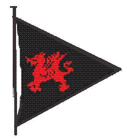
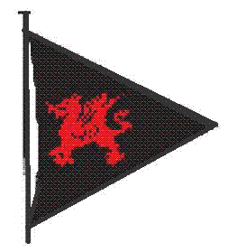

Tata Steel Sailing Club Margam - Training
Tata Steel Sailing Club Margam - Training
Training
and membership of the club is open to almost anyone (link to membership
page)
You
do not need to be employed by Tata Steel, however, you will need to join the
club first before
starting a training course.
The
club is recognised by the Royal Yachting Association (RYA) as an approved
training centre offering dinghy sailing, powerboat, safety boat, and 1st
aid courses. Our instructors hold the
appropriate RYA qualifications.
The
sail training programmes are suitable for ages 8 to 80+.
You don’t have to be able to swim, but it is an aid to
confidence on the water.
Why
not visit the club on a Sunday to gain an understanding of our activities. Any of our members will be able to direct you
to one of our instructors.
Download the Training
application form (
here )
----------------------------------------------------------------------------------------------------------------------------------------------------------------------------------------
Dinghy Training
Beginners
courses are normally held on
Sundays and Thursday evenings betweem 1st
May and 30 September. For both adults
and youngsters, the course equates to approximately 4 days training.
We have a
fleet of training dinghies to suit youngsters and adults :
-
·
Optimists
for children from the age of eight.
·
Toppers
for the young sailor
- Topaz UNOs (new in 2010) suitable for youngsters and adults
- RS Vision and a Topper Omega for
those who wish to learn and develop their skills in a multi person or
family dinghy.
- Lasers
– for the more competent adult
For more information, or to
book a place, please contact our chief instructor Jeremy Martin on 01656 861092
(e-mail training@tatasteelsailing.org.uk). If not available at the time, you can contact
any of our RYA qualified dinghy instructors – see contacts page on this website.
-------------------------------------------------------------------------------------------------------------------------------------------------------------------------------------------
Powerboat, Safety Boat , and 1st aid Training
RYA Powerboat level 1 & 2, and safety boat
courses are held to ensure members have the necessary
skills and knowledge to operate the patrol boats competently and safely. The courses prepare members for their roster
duties, and provide a pathway to becoming dinghy instructors.
Contact our Training Principal, Iain Williams, on
01656 746726 or e-mail principal@tatasteelsailing.org.uk
--------------------------------------------------------------------------------------------------------------------------------------------------------------------------------------------
Tata
Steel Sailing Club Margam – Training
RYA Level 1&2 - Introduction to dinghy sailing
The sail training courses are
designed for both absolute beginners, and for those returning to sailing after
a break.
RYA level 1 & 2 Activities
|
Outcomes
|
|
A
mix of classroom and water based training is practiced during the whole
course, commencing with a safety briefing and getting to know the dinghy. The
aim is to get you on the water as soon as possible. |
All trainees achieve either RYA
Level 1 or 2 qualifications |
Delivery
of the RYA level 1 & 2 sailing syllabus – includes:
·
The
correct clothing / equipment
·
Capsize
and recovery ·
An
understanding of racing |
You will achieve a good basic
knowledge of sailing, and boat handling skills. Upon successful completion of the
level 2 course, you will have knowledge of weather charts, forecasts and wind
strengths, tides and currents, and collision avoidance regulations; you will be able
to helm a dinghy safely and competently in good conditions, and have the
ability to make the correct decisions on the water and onshore. |
Our objective is to award adults with the RYA level 1 and
2 certificates; there
are equivalent certificates for youngsters.
Upon
completion of training, the club’s Optomist, Topper,
and Laser dinghies will be available for club sailing in good weather
conditions, until trainees have acquired their own craft. This facility is available on a first come
first served basis until December 31in the year of training only.
You
will find that our members will be only too willing to help you gain more
experience, and encourage you to join in our casual sailing and racing programmes.
We also have a new member liaison person - see Bob Adams on the contacts page